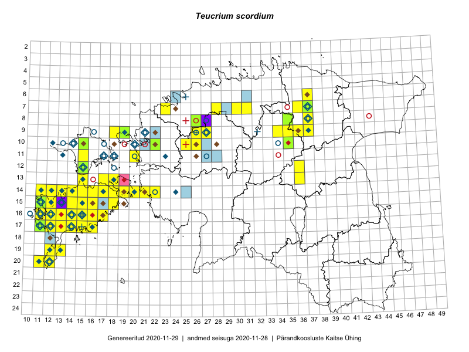

Teucrium scordium
Uuendatud: 2016-12-01
Kaardile koondatud taksonid: Teucrium scordium L.

Kaart põhineb 114 kirjel, neist vaatlusi 112 ja eksemplare 2.
Kuvatud viited 20 esimesele andmebaasikirjele, ülejäänud PlutoFis
- Toomas Kukk, Eerik Leibak: 2015-08-09: 14-15: ala
- Toomas Kukk, Eerik Leibak: 2015-08-09: 14-15: GPS punkt
- Toomas Kukk, Peedu Saar: 2015-08-05: 20-11: ala
- Toomas Kukk, Peedu Saar: 2015-08-06: 20-11: GPS punkt
- Peedu Saar: 2015-09-07: 16-17: ala
- Peedu Saar: 2015-09-07: 16-17: GPS punkt
- Meeli Mesipuu, Kadri Tali: 2015-07-06: 16-17: ala
- Meeli Mesipuu, Kadri Tali: 2015-07-08: 13-17: ala
- Toomas Kukk, Ott Luuk, Sander Laherand: 2014-08-24: 14-22: GPS punkt
- Toomas Kukk, Ott Luuk, Sander Laherand: 2014-08-24: 14-22: ala
- Jana-Maria Habicht, Ester Valdvee, Kirke Pilvik: 2015-07-14: 08-35: ala
- Jana-Maria Habicht, Ester Valdvee, Kirke Pilvik: 2015-07-25: 09-34: ala
- Jana-Maria Habicht, Ester Valdvee, Kirke Pilvik, Anu Nurk: 2015-07-30: 09-35: ala
- Jana-Maria Habicht, Ester Valdvee: 2015-08-15: 09-36: ala
- Jana-Maria Habicht, Ester Valdvee: 2015-07-15: 08-35: GPS punkt
- Jana-Maria Habicht, Ester Valdvee: 2015-07-15: 08-35: GPS punkt
- Mari Reitalu: 2015-08-01: 17-13: ala
- Mari Reitalu: 2015-08-29: 16-13: ala
- Mari Reitalu: 2015-08-29: 16-13: GPS punkt
- Mari Reitalu: 2014-05-18: 15-11: ala